鞍山市铁东区胜利小学欢迎您！
首页 > 详情信息
踏过温暖的阳春
走过绚烂的盛夏
迈过静美的金秋
感受苍茫的仲冬
时光荏苒，韶华更迭，我们的省级课题迎来了中期汇报！
12月29日下午，江苏省“十三五”省市规划课题中期检查及结题活动在鞍山市铁东区胜利小学西校区如期举行。此次活动分为课堂展示和课题结题论证两个环节。参与论证的课题有鞍山市铁东区胜利小学的《基于儿童视角的乡贤文化课程构建的研究》及教育局的《昆山教育微信公众号应用研究》。
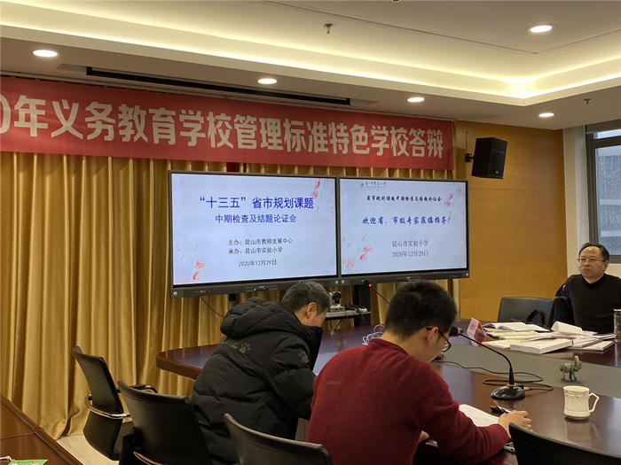
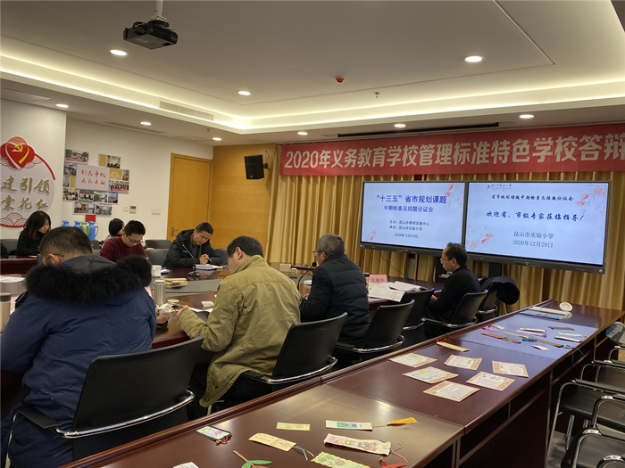
课堂展示
实验小学许春霞、周琳老师分别执教了《归有光》、《认识时分》，朝阳小学邵馨漪老师执教了习作《我的心儿怦怦跳》，新城域小学阮俏丽老师执教了《一张奇特的脸》，石予小学张堂老师执教了《用数对确定位置》，同心小学武文韬老师执教了《家乡的历史和发展》。这六节课老师们都紧扣住课题，真正做到了在教学中研究，获得了专家、领导、听课老师的一致好评。
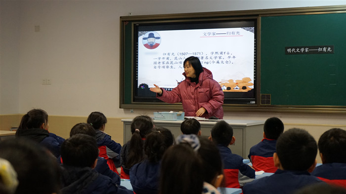
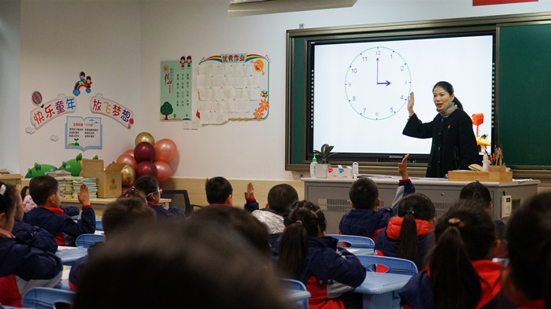
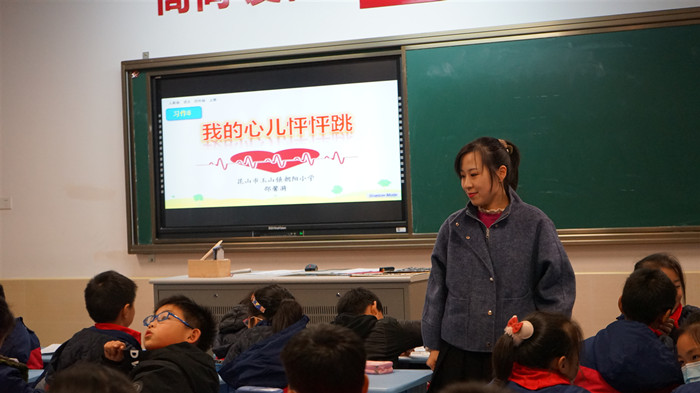
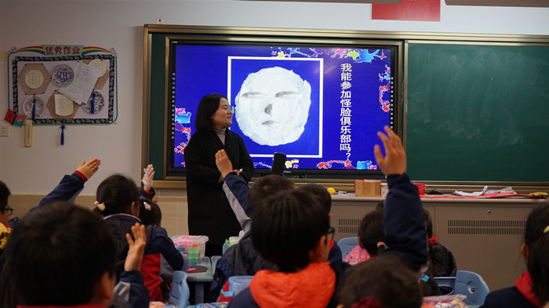
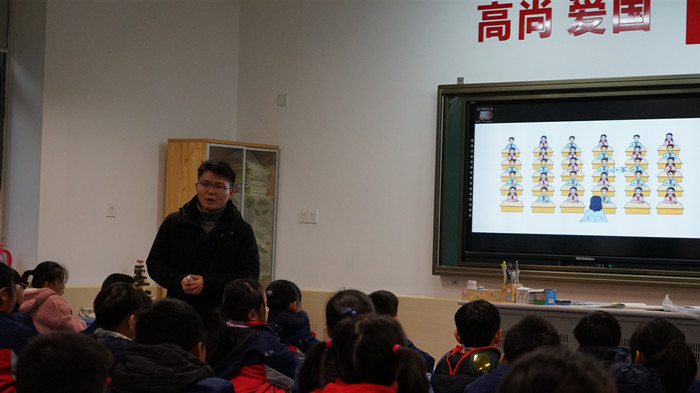
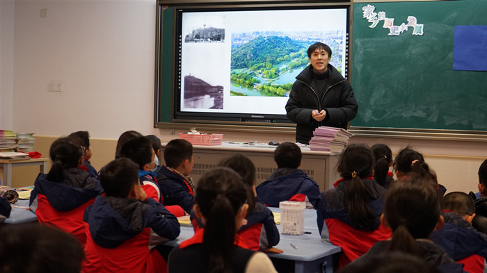
课题中期汇报及结题论证
参与论证会的有吴江区教育科学研究室徐炳嵘主任、教师发展中心研训部张敏华副部长、教师发展中心兼职教科员袁干斌主任、同心小学邓超副校长，以及教科一片的教科主任等领导。
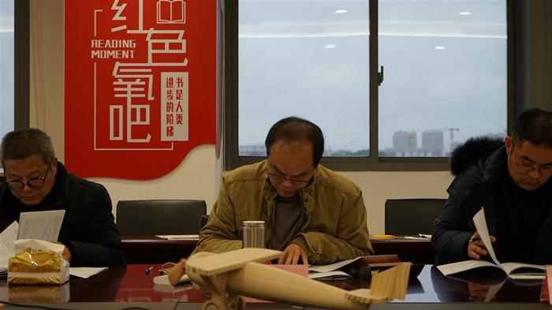
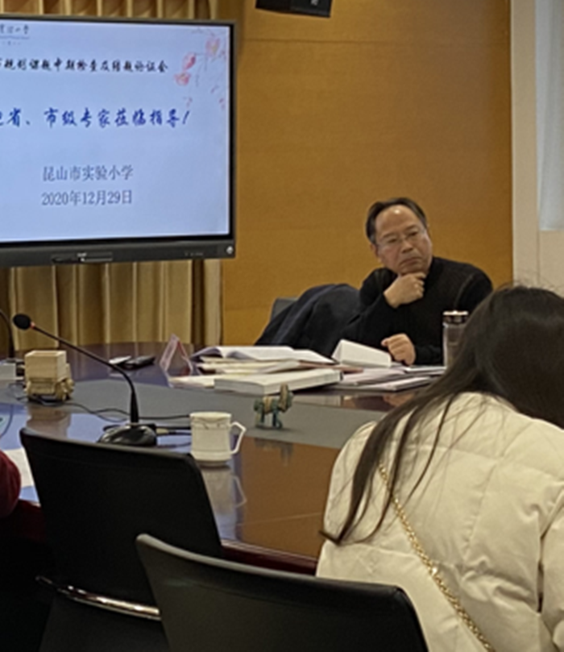
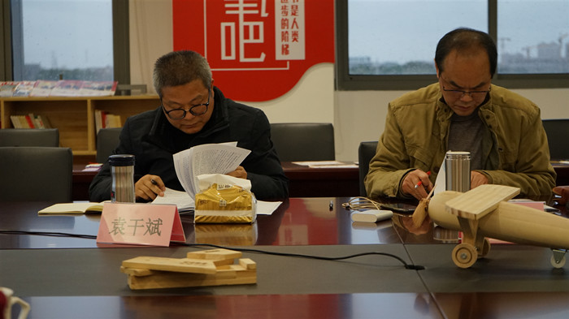
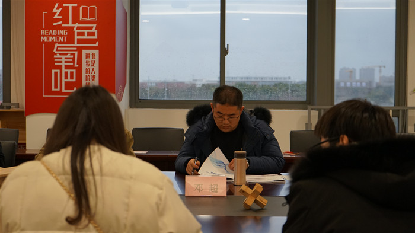
首先，由鞍山市铁东区胜利小学教科室周琳副主任作了《基于儿童视角的乡贤文化课程构建的研究》的中期汇报。周主任主要从研究背景、目标与内容、进展及措施、阶段成果、反思等几个方面做了详尽的汇报。
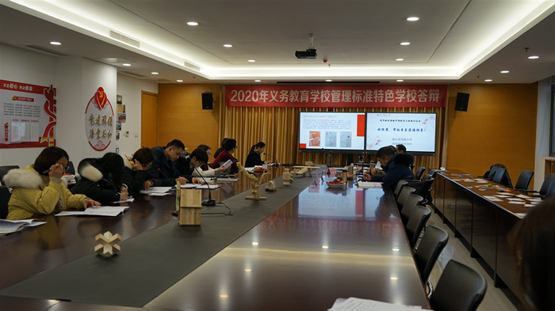
其次，由教育局办公室张斌老师作了《昆山教育微信公众号应用研究》的结题汇报。
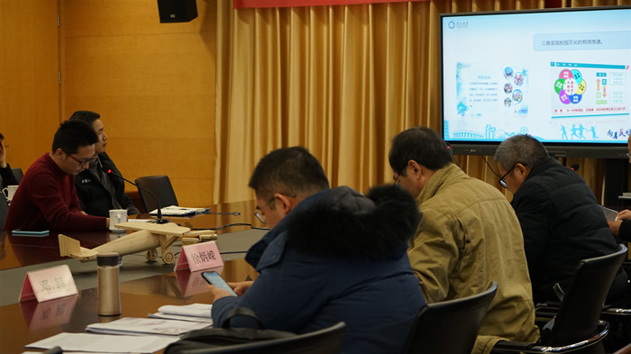
论证组专家认真查看资料，听取了课题组汇报，给予了高度评价，同时提出课题研究必须符合创新性、科学性和可行性，他们一致认为两项课题研究具备很强的推广意义，具有一定实效性。
《基于儿童视角的乡贤文化课程构建的研究》从儿童的视角出发，依托昆山地区丰富的乡贤文化资源和学校教师在校本课程开发中积累的实践经验，坚持人本立场，突出儿童本位，注重传统文化引领和课程构建，积极开展贴近儿童校园生活的文化主题活动，为儿童成长注入正能量。可以说这既从本地区教育教学的实际需求出发，又符合国家新课程改革所提倡的教育教学总目标，符合新世纪对人才培养的目标要求，既有现实意义、推广价值，更有一定的持续性、前瞻性。
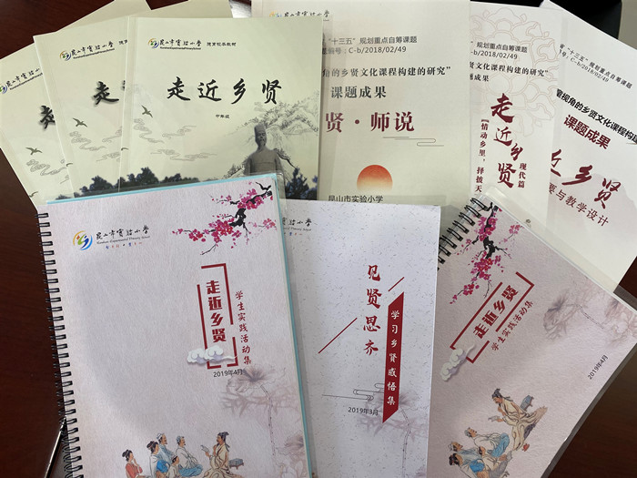

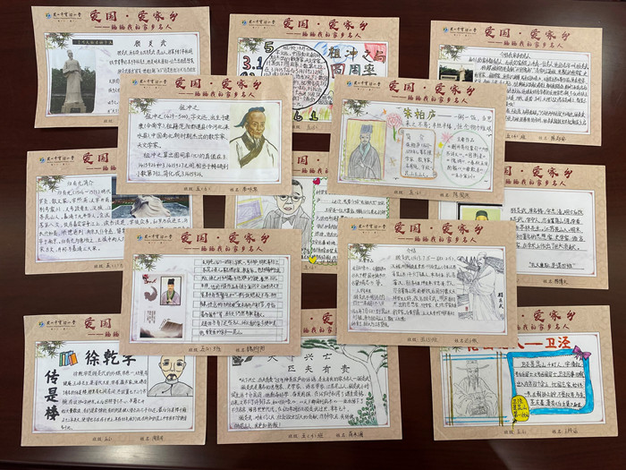
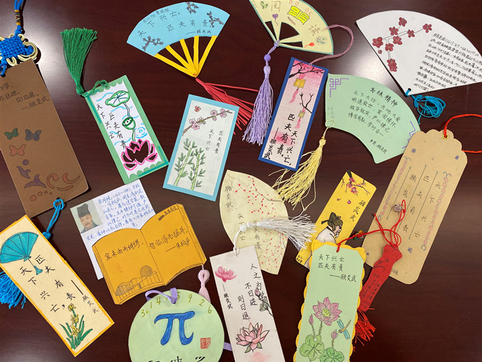
《昆山教育微信公众号应用研究》这个课题选题和立项具有一定的现实意义和实践价值，立意非常新颖，具有前瞻性。研究的五个目标非常明晰，研究的内容整个研究过程扎实有序，应用非常广泛，体现了课题研究的实效性。课题最终的研究成果丰富，具有一定的指导意义。
在今后的研究中，我们将勤于笔耕，潜心研究，期待教育科研一路向阳，花开烂漫！